Работы и техники
Столярный мастер
Ошибочно считать, что реставрировать мебель может дизайнер или художник, или вообще просто талантливый самоучка.

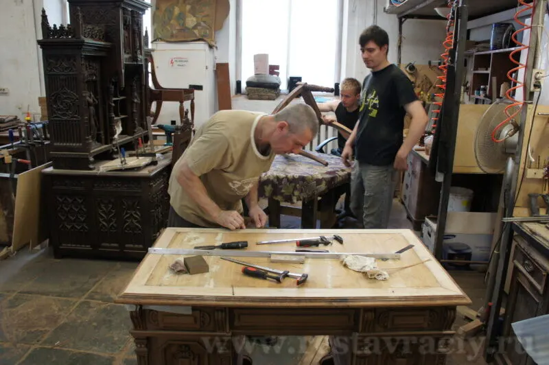
О чём рассказывает мастерская
- Щели на столе
- Трещины на антикварной мебели из Европы
- Совет мебель
- Как выровнять дерево, если его повело
- Полосы на мебели
- Шашель.
- Что делать, если мебель рассохлась?
- Бронза для старинной мебели
- Следы реставрации
В материале мастерской
Фотографии и детали


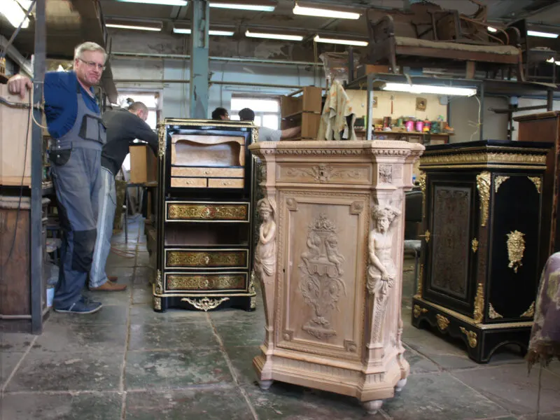
Открыть снимок у мастерской

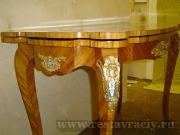
Открыть снимок у мастерской

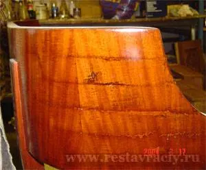
Открыть снимок у мастерской

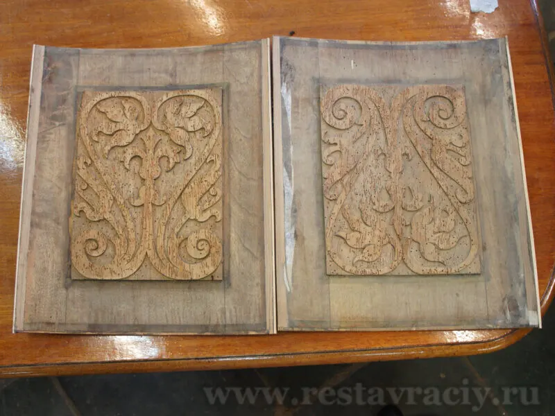
Открыть снимок у мастерской

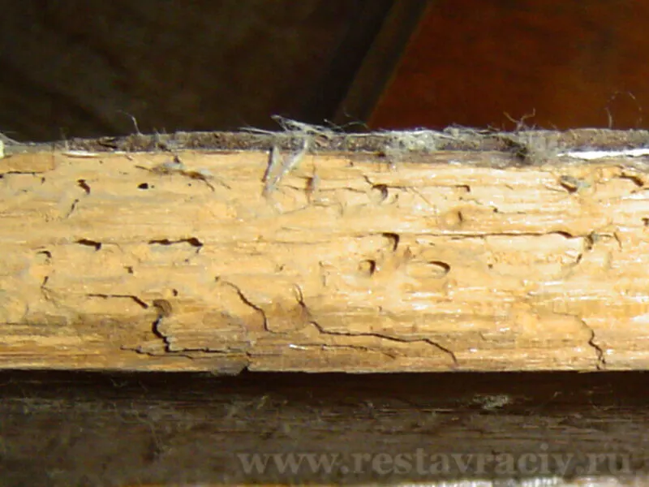
Открыть снимок у мастерской

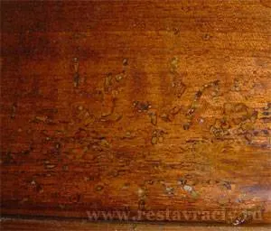
Открыть снимок у мастерской

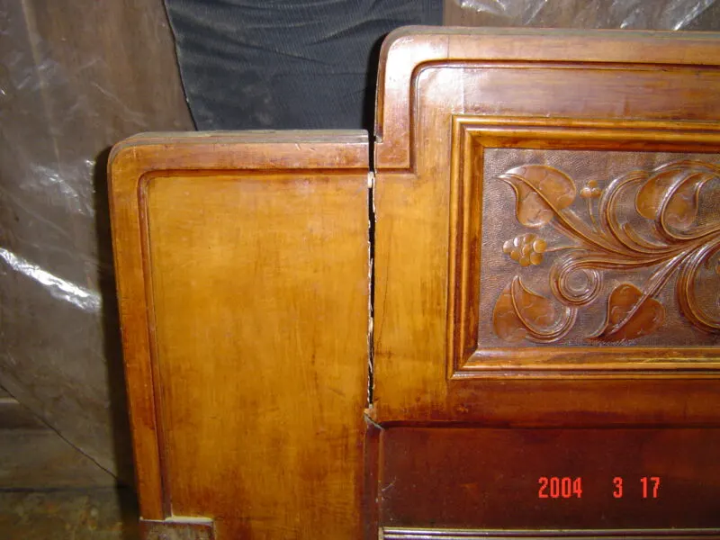
Открыть снимок у мастерской

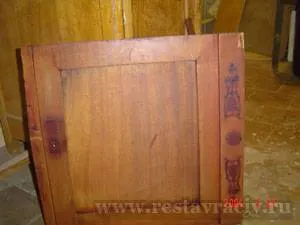
Открыть снимок у мастерской

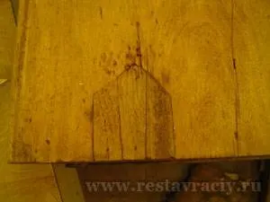
Открыть снимок у мастерской

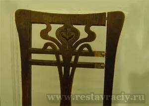
Открыть снимок у мастерской

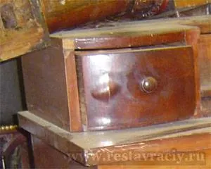
Открыть снимок у мастерской

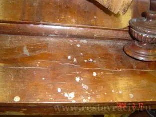
Открыть снимок у мастерской

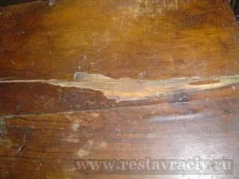
Открыть снимок у мастерской

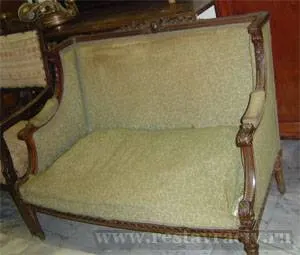
Открыть снимок у мастерской

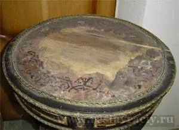
Открыть снимок у мастерской
Посмотреть снимки с сайта мастерской 2
Оригинальные фотографии откроются здесь с сайта мастерской.
 Открыть снимок у мастерской
Открыть снимок у мастерской  Открыть снимок у мастерской
Открыть снимок у мастерской Есть похожая вещь?
Подберите ракурсы для предварительной оценки.